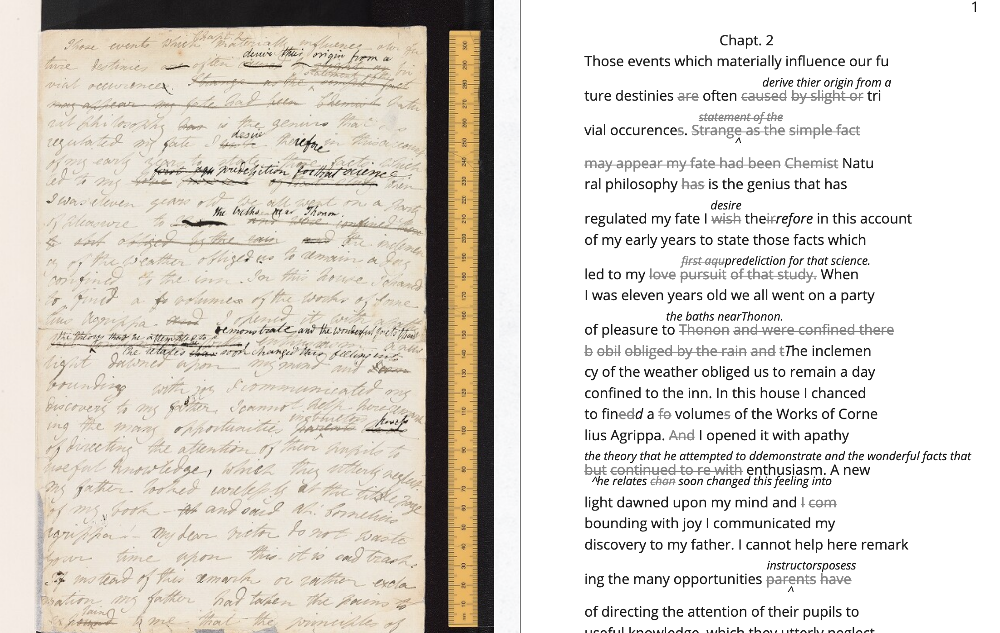

Table of Contents
1 two
"Containment and Dominance: Encoding Queer Erasure in Oscar Wilde's The Picture of Dorian Gray"
1.1 Abstract
Literary and textual scholars have long speculated about Wilde's intentions for revising the homoerotic content of his famous novel, The Picture of Dorian Gray (1891). More recently, electronic editing standards enable scholars to explore textual composition histories within a digital space. This project uses the Text Encoding Initiative (TEI) method, an electronic editing tool that allows researchers to ‘mark up', or tag, textual elements. Using the TEI, I mark up the first chapter of Wilde's manuscript of Dorian Gray, which introduces the story's three main characters, Basil Hallward, Lord Henry Wotten, and Dorian Gray. Drawing from debates in Textual Scholarship and Queer Historiography, I question how electronic editing with the TEI might register or ‘rescue' the queer affects of this text. My work here pushes against what I identify as TEI's main constraint, which is its limitation for handling data that is discrete, rather than smooth or ambiguous data, like the homoeroticism of this text. I conclude by proposing a TEI customization that marks Wilde's revisions according to the four affects of ‘intimacy', ‘beauty', ‘passion' and ‘fatality'. As an experiment in ‘queer encoding', this customization shows the limits of the strict data structure of the TEI for engaging the fluidity and complexity of queerness in the text.
1.2 Introoduction
In the first scene of the novel, The Picture of Dorian Gray (1891), the painter Basil Hallward confesses to his friend Lord Henry Wotton why he cannot exhibit the portrait of the eponymous hero. Basil admits, "Where there is merely love, they would see something evil, where there is spectacular passion, they would suggest something vile" (Wilde 21). By "merely love" and "spectacular passion," does Basil mean a kind of love and passion that is divorced from homosexuality? Or does he mean there is nothing "evil" or "vile" about this kind of love and passion? Regardless of Basil's meaning, this striking line, among many others that carry homoerotic innuendos, never appears in print. It is excised during Oscar Wilde's revision process, along with similar suggestions of homoeroticism between the three main characters of the story.
The textual scholarship on this revision process generally agrees that Wilde neutralizes Basil's erotic fascination with Dorian by transforming it into aesthetic appreciation. Sidestepping romance for beauty, and the text is more likely to get by the censors. With homosexuality obscured to a cipher, Wilde can complicate matters with aesthetic principles like, "To reveal art and conceal the artist is art's aim," as stated in the "Preface" to the published book version. One critic, Nicolas Ruddick explains that this revision process creates a double moral to the text. According to Ruddick, Wilde aestheticizes Dorian in order to emphasize a moral about the dangers of vanity at the expense of another, more covert moral about the liberalization of homosexuality. While the moral about vanity "dramatize[s] the disastrous consequences of the preference of the beautiful at the expense of the good," the other moral about homosexuality "explores the destructive effects of the clandestine or closeted life" (Ruddick 126, 128). The novel's famous portrait indexes the convergence of these two morals: "the appalling changes to Dorian's painted image … strongly suggest that the unspeakable practices indulged in by the protagonist are unspeakable in themselves" (Ruddick 129).
The question of "unspeakability" is the topic of this chapter. This project begun as as exploration of homosexuality's unspeakability, and how one might discover and describe it using digital tools that enable one to mark up Wilde's revisions of the homoerotic elements. To do this work, I used an electronic editing tool called the Text Encoding Initiative (TEI, explained further below) that enables me to register and describe Wilde's revisions according to themes like "passion," "beauty," "intimacy," and "fatality." But what begun as a markup project eventually expanded into an interrogation of the data format itself, the rigid, hierarchical structure of the TEI. I found that this data format works best with material that is discrete and bounded, rather than smooth or blended, like the queer themes of the text. I created a custom TEI schema that tags homoerotic elements in a way that surfaces their elusiveness. As a labeling tool, the TEI reveals moments of plurality and permeability, when themes like "intimacy" and "fatality" threaten the bounds of the rigid data structure. As my thinking developed, I found the problem with TEI goes deeper than containerization. This custom tool, and the ways in which it didn't work, enabled me to think productively about the totalizing nature of hierarchical power structures. In what follows, I suggest that, underlying Ruddick's two morals about beauty and homosexuality, there is a third level of "unspeakability," this one about power, about who has it and who is subject to it.
My project uses the TEI markup not only to examine the nature of Wilde's revisions, but also the potential for technological tools to engage queerness in textual data. In doing so, it endeavors to answer a question that provokes the emerging field of Queer Digital Humanities, or Queer DH. As literary and electronic textual scholar Julia Flanders asks: "do we need to queer markup, or is markup already queerable?" (2017). Flanders's question considers the TEI's place between two current approaches in Queer DH: the first approach wants to disrupt formal systems by imagining alternative ones, and the second, by contrast, maintains that queerness is built into computing and is inherent in computational logic. In an attempt to cut between these debates, this project first searches for a structural constraint within the TEI format, and then works through this constraint to analyze the homoerotic elements in Wilde's manuscript revisions. As such, this project aligns with another that uses the TEI to destabilize our current understanding of Wilde's textual and historical legacy. Jason A. Boyd's Texting Wilde Project uses the TEI to mark up the biographical information, particularly references to persons, places, and events, in writings about Wilde's life. Its goal is to reveal the historical discrepencies and inaccuracies across Wilde's biography. Boyd points out that "Our knowledge of 'Oscar Wilde' is not comprised of a corpus of pure and simple facts that allows us an unmediated apprehension of a real person separated from us by only time, but rather this knowledge is comprised of a densely complex and often contradictory accretion of texts" (Boyd para. 1).
Similar to Boyd, my project also uses the TEI to complicate the understanding of Wilde's textual legacy. It identifies one major constraint of the TEI: that it works best with data that is discrete, rather than smooth data, like the homoeroticism obscured by Wilde's pen. Here, I apply the rigid constraint of the TEI data structure towards marking up and analyzing this text's homoeroticism, which I group into the general themes of "intimacy," "beauty," "passion," and "fatality," as well as the pen strokes that Wilde used to strike these elements from the text. The functionality of the TEI as a tool that bounds and labels data into discrete elements allows me to explore the indeterminate boundaries of these queer themes in the text. The strict nature of this tool also suggests, on a deeper level, how dominance structures work to implicitly determine and delimit information.
1.3 Textual Scholarship
To inform my approach for handling homoerotic subject matter within digital contexts, I bring Textual Scholarship and Queer Studies, into conversation. The debates within these fields allow me to carve out a methodology for digitizing what electronic editing scholar Jerome McGann calls our "textual inheritance" (McGann, 2001: xi). Between these two fields, I identify a parallel debate between what I term the "restorative" and "productive" approaches to critical analysis.
The history of Textual Scholarship first tends toward the restorative approach, beginning with the work of Shakepearean scholar Ronald B. McKerrow, who maintains that the goal of scholarly editing is to preserve authorial intention. McKerrow's influential model for "copy-text" editing, which establishes the base-text for editing on an early witness that most closely resembles the author's original intention, eventually gives way to Walter W. Greg's approach that expands the purview of critics to more than a single witness. Subsequently, textual scholars like Fredson Bowers and Thomas Tanselle advance Greg's work, proposing the "eclectic edition" as the format that enables the editor to distil authorial intention from multiple sources.1 Tanselle in particular takes this principle to its logical conclusion, arguing that the "work" exists in an ideal form, beyond the reach of physical corruption: physical corruption:
Those who believe that they can analyze a literary work without questioning the constitution of a particular written or oral text of it are behaving as if the work were directly accessible on paper or in sound waves … its medium is neither visual nor auditory. The medium of literature is the words (whether already existent or newly created) of a language; and arrangements of words according to the syntax of some language (along with such aids to their interpretation as pauses or punctuation) can exist in the mind, whether or not they are reported by voice or in writing. (Tanselle, 1989: 16–17)
Tanselle's position enshrines the editor as the only figure capable of realizing the "work" in its ideal form. Because the act of inscription involves physical tools that can corrupt this ideal form, the writer requires an editor whose distance from the creation of the work enables his objective evaluation of its intention. Tanselle's quite radical view for preserving authorial intention exemplifies the extreme of the restorative approach.
If the restorative approach promotes editorial practices that increasingly consign the role of the editor as a recoverer or preserver of texts, the productive approach empowers the editor as an enabler of potential textual readings. Toward the end of the 20th century, textual scholar D. F. McKenzie's ideas about "the sociology of texts" were the first to widely challenge the claim that a single text can represent an "ideal" version, that is, authorial intention. According to McKenzie, the text is never one single object but stems from a number of human agencies and mechanical techniques that are historically situated; he points out that, "Every society rewrites its past, every reader rewrites its texts, and if they have any continuing life at all, at some point every printer redesigns them" (McKenzie 25). Jerome McGann expands this sociological perspective into digital editing environments, where electronic formats create opportunities for presenting textual variation. McGann explains that textual criticism in print format is limited because a print text must conform to the linear and two-dimensional form of the codex–the same form as its object of study. Digital editions, by contrast, can be designed for complex, reflexive, and ongoing interactions between reader and text. McGann notes that his work on the digital Rossetti Archive brought him to repeatedly reconsider his earlier conception and goals, explaining that the archive "seemed more and more an instrument for imagining what we didn't know" (McGann 82). McGann's approach counters the traditional fidelity toward authorial intention with a drive to harness the potentiality of textual variation. The transformation of literary material into electronic format becomes a vehicle for a critical analytical method that McGann and Lisa Samuels call "deformative criticism," which works by distorting, disordering, or re-assembling literary material in order to estrange the reader from their familiarity of the text. Continually subscribing the text to new configurations, this estrangement confronts the reader with new insights about its formal significance and meaning.
For that reason, deformative criticism encourages a productive approach to editing.
1.4 Queer Historiography
My work encoding Wilde's revisions to the manuscript plays against the long-standing "recovery" project about Wilde's intentions as he revises Dorian Gray into the periodical and book versions. Textual scholars like Donald Lawler, Joseph Bristow and Nicolas Ruddick claim that Wilde's revisions work toward the overall goal of aestheticizing the text. This project of aestheticization begins in the manuscript which is eventually published, in periodical form, in Lippincott's Monthly Magazine on June 20, 1890.2 This first printing of ‘The Picture of Dorian Gray', which spans 98 pages over 13 chapters, was widely criticized in the press for its seemingly ambiguous stance on an immoral protagonist. Bristow explains that ‘[Wilde's] narrative struck the [reviewers] as a work that appeared “corrupt”, displayed “effeminate frivolity”, and dealt “with matters only fitted for the Criminal Investigation Department”' (2000: xviii). Wilde spends the next several days defending his work in letters to the editors, entering into a public correspondence with them.3 A few months later, in the early spring of 1891, Wilde publishes a ‘Preface' that makes such claims as ‘Those who find ugly meanings in beautiful things are corrupt without being charming. This is a fault' and ‘To reveal art and conceal the artist is art's aim'.4 Scholar Barbara Lecklie asserts that, by these complex and incisive statements, ‘Wilde's strategy is to refocus on art and disparage the focus on the reader by saying that the reader is the one who makes a work immoral' (2013: 173). Similarly, Lawler argues that ‘the “Preface” … hold[s] up aesthetic beauty and artistic effect as the only legitimate criteria of critical evaluation' (1988: 16). The ‘Preface' is included in the subsequent iteration of Dorian Gray, published in a book version by Ward, Lock & Company in April 1891. According to the editor of the Uncensored Edition of Dorian Gray, Victor Frankel, Wilde here makes significant deletions of passages referencing homosexuality, promiscuous or illicit heterosexuality, and ‘anything that smacked generally of decadence' (2011: 47–48). Wilde also ‘heighten[s] Dorian's monstrosity toward the novel's conclusion' to bring the story ‘to a moral conclusion that he thought would silence his critics' (Frankel, 2011:30).
Like Textual Scholarship, the field of Queer Studies has also engaged in debates about methodologies for recovery. In the subfield of Queer Historiography, which Susan McCabe describes as the "critical trend of locating 'identifications' (rather than identity), modes of being and having, in historical contexts," there is a debate about the extent to which critics in the present can adequately define queerness in the past (McCabe 120). The Queer Historicist position advocated by scholars like David Halperin and Valerie Traub maintain that homosexuality is historically constructed, that "queerness" means something different today than it did in the past, and that scholars can get at its meaning by employing a Foucauldian genealogical method that traces its meaning over time. Identity based on sexuality, according to Halperin, is a modern cultural production: "no single category of discourse or experience existed in the premodern and non-Western worlds that comprehended exactly the same range of same-sex sexual behaviors … that now fall within the capacious definitional boundaries of homosexuality" (Halperin 88). Evoking Judith Butler's famous description on the word "queer" as "never fully owned, but always and only redeployed, twisted, queered from a prior usage and in the direction of urgent and expanding political purposes," Valerie Traub explains that the utility of the word "queer" as a descriptive term relies on historical specificity (173):
Queer's free-floating, endlessly mobile, and infinitely subversive capacities may be strengths—allowing queer to accomplish strategic maneuvers that no other concept does—but its principled imprecision implies analytic limitations … if queer is intelligible only in relation to its social norms, and if the concept of normality itself is of relatively recent vintage (Locherie), then the relations between queer and the changing configurations of gender and sexuality need to be defined and redefined. Traub 33
When "queer" is applied ahistorically, it loses its descriptive value. According to this historicist position, homosexuality, in order to be legible, necessitates historical specificity.
By contrast, the "unhistoricists" are wary of demarcating queer identity and identification across history. These scholars, who include Jonathan Goldberg, Madhavi Menon, and Heather Love, maintain that the attempt to define "queer" implicitly subscribes queerness to a logic of progress, a heteronormative teleology. Historicizing queerness has the effect of normalizing queerness, according to Goldberg and Menon: "to produce queerness as an object of our scrutiny would mean the end of queering itself" (1609, 1608). Within this view, Heather Love offers an opportunity for continuing the project of queer history. Her methodology takes negative affects like shame, anger, disgust, hatred, disappointment as part of an accounting of "the social, psychic, and corporeal effects of homophobia" (2). This method, which she calls "feeling backward," takes negative affects and histories without attempting to "fix" them into contemporary conceptions of identity and desire. Rather, Love is interested in exploring the way that subjects turn away or refuse the critic's attempt to "redeem" or "rescue" them. To illustrate this process of "feeling backward," she offers the myth of Orpheus and Eurydice, pointing out that Orpheus prefers to behold Eurydice in the darkness of the Underworld rather than in the sunlight, which would transform her into something fully accessible and therefore less desirable.5 Love, who asserts that "Queer history has been an education in absence" (52), points out that "[Eurydice's] specific attraction for queer subjects is an effect… of a historical experience of love as bound up with loss. To recognize Eurydice as desirable in her turn away is a way of identifying through that loss" (51).
Across Textual Scholarship and Queer Studies, there are two parallel methodologies for addressing the problem of what to do with the past. On the restorative side, the impulse to recover authorial intention resembles the drive to historicize queer identification. Both are motivated by a notion that the past is accessible to the discerning critic. On the productive side, deformative criticism plays on the same creative instinct as "feeling backward." Love describes this work as "a mode of historiography that recognizes the inevitability of a 'play of recognitions' but that also sees these recognitions not as consoling but as shattering" (Love, 2009: 45). In this "play of recognitions," which describes the critic's "search for roots and resemblances" within queer subject matter, I want to emphasize the word "play" (45). The impossibility of recovering the past enables the critic to experiment with alternative methods of analysis. For Love, accepting queerness as something that eludes containment compels her to explore how queerness escapes knowability. I propose that this method of attending to elusive affects, without trying to transform them into something more palatable, can apply to digital contexts and toward productive ends. One may, borrowing from McGann and Samuel's idea of deformance, reconceive textual editing as a formal experiment. The TEI can be used to explore how electronic editing tools impose new formal structures on queer subject matter. This allows one to take the attempt at recovery and, rather than aim for resolution, multiply the potential readings of textual elements. Using the TEI in this way allows researchers to direct ‘queer encoding' practices toward enacting what Kadji Amin, Amber Jamilla Musser, and Roy Pérez describe as ‘queer form', or ‘the range of formal, aesthetic, and sensuous strategies that make difference a little less knowable, visible, and digestible' (2017: 235).
An examination of queer form in this text will reveal the ways in which power is more deeply entrenched than I had anticipated. To better understand the workings of power in data structures, it is useful to examine the historiographical work on arguably one of the most precarious datasets in history—-the archive of slavery. Like Heather Love, scholar Saidiya Hartman seeks to recuperate (without recovering) the lives of these subjects. But unlike Love, Hartman's subjects are constituted in history by their absence in the archive. Hartman's question haunts all historiographical work in this area: "How does one revisit the scene of subjection without replicating the grammar of violence?” (4). She explains that the "violence of the archive" is a double erasure—not only does the archive omit or obscure information, but it also employs a language that cannot approximate experience (Hartman 2). Pushing against the tradition of recording the subject in the terms of their objectification, in "a display of the violated body, an inventory of property," Hartman's goal is to write about these subjects in a way that also invites possibility for living. For doing so, she proposes a method of "critical fabulation" (2, 11). Like "deformance" and "feeling backward," her method of "critical fabulation" plays on imagination and experimentation. But due to the death and violence that constitutes this archive, formal experimentation is not enough.
1.5 TEI
Created specifically for working with literary material, the TEI
enables researchers to describe, transcribe and edit print text or
manuscripts in electronic format. The TEI enables users to "mark up"
aspects of literary texts that they think are important, such as
structural elements (chapters, paragraphs, line breaks), physical
details about the text (revisions, illegible text) or conceptual
elements (persons, geographical locations). To mark up these elements,
encoders use "tags." such as <line> to indicate a line of text,
<del> to indicate deleted text, and <person> for a reference to a
person. To illustrate what markup looks like, pictured below is an
image of Mary Shelley's manuscript of Frankenstein; or, The Modern
Prometheus (1818) and its diplomatic transcription (see Figure
1). Beneath them is an excerpt of the underlying TEI code, created by
the researchers at the Shelley-Godwin Archive.
Image of the manuscript and diplomatic transcription of Frankenstein (Bodleian MS Abinger c.56: 1816), transcribed and encoded by the Shelley-Godwin Archive.

<handShift medium="pen" new="#mws"/>
<line>Those events which materially influence our fu</line>
<line>ture destinies <del rend="strikethrough">are</del> often <mod> <del rend="strikethrough">caused</del>
<del rend="strikethrough">by slight or</del>
<add hand="#pbs" place=”superlinear”>derive thier origin from a</add> </mod> tri </line>
<line>vial occurence <del rend="strikethrough">s</del>.
<mod spanTo="#c56-0005.01"/> <del rend="strikethrough" next="#c56-0005.02">Strange as the</del>
In the encoding, the <line> tags indicate lines of text, and <del>
tags indicate deleted text. Through this level of detail, TEI
facilitates deep and complex description of textual material for
scholarly research. This excerpt also includes a <handShift> tag and
@hand attribute, which indicate whose "hand" is responsible for
writing each section of text: a valuable piece of information for a
text co-edited by Shelley's husband, Percy Shelley.
TEI documents consist of an ordered hierarchy. The document
organization resembles a tree structure, with one "root" component and
several "branches." The TEI requires that all data be contained as
discrete components within this bounded structure, and they cannot
overlap unless the inner element is fully nested within an outer
element. For example, a <del> element must be fully contained within
its parent element, say a <line> or <paragraph> element, depending
on the document schema.
Implied by this data model is a structure of dominance, where the higher or "parent" element exerts some control over the lower or "child" element. Within a hierarchical data model, conflicts arise when elements overlap, from the clash between structural and semantic dimensions of the elements. Element overlap is essential for some forms of written language where textual structure, such as syntax or grammar, might overlap with semantics. XML researcher Jeni Tennison points out that, "the way in which the syntactic (sentence/phrase) structure overlaps with the prosodic (stan/za/line) structure is one important way in which you can analyse a poem ("Overlap, Containment, and Dominance"). Tennison, who "want[s] to see if we can get away with not having hierarchy as a fundamental part of the information model," distinguishes dominance from containment:
When you’re talking about overlapping structures, it's useful to make the distinction between structures that contain each other and structures that dominate each other. Containment is a happenstance relationship between ranges while dominance is one that has a meaningful semantic. A page may happen to contain a stanza, but a poem domainates the stanzas that it contains. Tennison 2008, "Overlap, Containment, and Dominance"; emphasis original
As a solution that prioritizes containment while also suggesting dominance relationships, Tennison proposes a new (but now unsupported) markup language: "The Layered Markup and Annotation Language" (LMNL). It uses a series of ranges that describe start and stop points for an element, rather than nesting elements one inside the other. In the example below, the tags are left open to accommodate additional ranges:
[book [title [lang}en{lang]}Genesis{title]} [chapter} [section [title}The creation of the world.{title]} [para} [v}[s}[note}In the beginning of creation, when God made heaven and earth,{note [alt}In the beginning God created heaven and earth.{alt]]{v] [v}the earth was without form and void, with darkness over the face of the abyss, [note}and a mighty wind that swept{note [alt}and the spirit of God hovering{alt]] over the surface of the waters.{s]{v] [v}[s}God said, [quote}[s}Let there be a light{s]{quote], and there was light;{v] [v}and God saw that the light was good, and he separated the light from darkness.{s]{v] [v}[s}He called the light day, and the darkness night. So evening came, and morning came, the first day.{s]{v] {para] …{chapter]…{section]…{book] "The Layered Markup and Annotation Language (LMNL)"
This language indicates dominance relationships through layering markers, rather than through a tree structure. Despite this feature, the document object model is considerably less readable than the TEI.
The problem with TEI, and more deeply, with its parent structure, XML, is that dominance structures are totalizing. Attempts to curtail this dominance, as LMNL demonstrates, can result in redundancy and convolution. The TEI Guideline’s suggestions for handling dominance appear similarly complicated, especially in comparison to more traditional TEI markup. Module 16, on "Linking, Segmentation, and Alignment," describes various methods for encoding information that is not hierarchic or linear, including the use of pointers, blocks, segments, anchors, correspondence, alignment, synchronization, aggregation, alternation, sequestration, marginalization, among others. In Module 20, “Non-hierarchical Structures,” more suggestions include: “redundant encoding of information in multiple forms," and "the use of empty elements to delimit the boundaries of a non-nesting structure.” These solutions work by severing elements into components that maintain their own internal hierarchies which can be later recombined into the dominant hierarchy. When the totalizing nature of the TEI is diluted, the effect is to create a bureaucratization that disrupts its sense of unity.
Though the strict tagging structure of the TEI forces encoders to organize textual elements as discrete, ordered data, it also enables them to create their own labels for the elements. Perhaps the most useful aspect about the TEI is this customizability, which it inherits from its parent language, eXtensible Markup Language (XML). As an "extensible" language, TEI users can create their own tags to describe the particular elements they wish to encode. The Women Writers Project (WWP), directed by Julia Flanders, adequately frames how TEI's inherent extensibility can address textual ambiguity. According to the WWP:
Unlike many standardization efforts, the TEI … explicitly accommodat[es] variation and debate within its technical framework. The TEI Guidelines are designed to be both modular and customizable, so that specific projects can choose the relevant portions of the TEI and ignore the rest, and can also if necessary create extensions of the TEI language to describe facets of the text which the TEI does not yet address. (Flanders, 1999–2021)
Because TEI is built from a language that allows its users to build their own version of that language, there is potential for representing the elements necessary for a project by customizing these elements on a project-by-project basis.
There are a number of projects that explore the potential of the TEI's customization to be used for "queer encoding," such as the encoding of queer gender. Marion Thain encodes the diaries of a complex writing subject: the late 19th-century English poet, Michael Field. Michael Field is a pen name for the lesbian couple, Katharine Bradley and Edith Cooper, which signifies "the assumed names of two separate women, as well as appearing to signify one single male identity" (Thain 228). Fortunately for Thain, the TEI enables the encoding of distinct identities, which is central for understanding the queerness of the diaries:
[T]he proliferation and slipperiness of names is no mere childish caprice but a core part of the articulation of queer: an unhinging of "given" or apparently predetermined identity through a strategy that articulates identity as constantly shifting, constructed, and performative. Text encoding can, in a simple but powerful way, help us explore and map this crucial strand of queer identity construction across the diary. (Thain 233)
Thain's approach harnesses the hierarchical nature of the TEI to list
the various references to each personage within the <persName> tag.
This <persName> tag allows Thain to "render searchable words not in
the text but intimately tied to it. This is not a small issue in a
diary in which Katharine Bradley herself is referred to by more than
20 different names" (Thain 233). By enabling Thain to encode multiple
names for each writer of the text, the TEI data structure enables
Thain to manage the problem of queer identity in this text.
While some gender identities may take manifold forms, some of which
can be contained within a capacious enough set of tags and attributes,
other gender identities may not fit into distinct categories. As
gender and queer studies scholars may know, some elements of identity
will resist containment within unified or discrete idea of
subjectivity. In this case, the problem goes deeper than the name of
the tag itself and runs up against the hierarchical structure of the
TEI document model. At the most recent annual TEI Conference and
Members Meeting in 2022, Elisa Beshero-Bondar and her team reflect on
their work developing a <gender> element for the TEI
guidelines. Their project proposes a new <gender> element that is
careful to weigh the expressive potential for representing gender
against the possible risks of reifying normative cultural
biases. Beshero-Bondar and her colleagues explain that,
Unexpectedly, we found ourselves confronting the Guidelines’ prioritization of personhood in discussion of sex, likely stemming from the conflation of sex and gender in the current version of the Guidelines. In revising the technical specifications describing sex, we introduced the term “organism” to broaden the application of sex encoding. We leave it to our community to investigate the fluid concepts of gender and sex in their textual manifestations of personhood and biological life. Beshero-Bondar et al.
While their new proposed element, <gender>, gives the team some
capacity to represent gender as distinct from sex, the tagging
structure nonetheless perpetuates a rule that "sex" serves some
concept of personhood. The proposed solutions to this problem, which
include exchanging <person> for the more capacious <organism> and
<entity>, as recently proposed in the TEI documentation itself,
keeps intact the notion that "sex" is something a person contains,
that is, sex as something belonging to or expressed by a notion of
personhood (martindholmes 2022).
It is safe to say that the TEI works effectively depending on the kind
of queerness that we want to encode. If that queerness resists an idea
of unified or contained personhood, then encoding will be
difficult. For example, tags such as <gender> or ~<person> limit
elements to one value and creates obstacles for scholars working to
encode multiple or diverse sexual identities. Here, Pamela Caughie and
Sabine Meyer use the the TEI to encode Man Into Woman, the life
narrative of Danish painter Lili Elbe, who undertook one of the first
gender affirming surgeries in 1930. The attempt to mark up Elbe's
complex gender ontology brings Caughie and Meyer against this
structural limitation of the TEI:
[T]he deeper we got into mark-up, the more evident it became that the categories and hierarchies available to us were inadequate for our task… to identify a male subject who at times presents himself as masquerading as a woman, at others as being inhabited by one, and who eventually becomes a woman, in a life history narrated retrospectively from the perspective of Lili Elbe. (Caughie and Meyer, 2018: 231)
The limitations of the <gender> tag forces these scholars to
consider the ways that the TEI effectively reifies gender as
essential. For this project, the fixity that the TEI imposes upon Elbe
as a queer subject brings out the ways that gender is situated and
relational across this text.
Why do Caughie and Meyer struggle to encode Elbe's identity while Thain appears to succeed with Fields'? This question about the TEI's capacity to adequately categorize queer identity points to a deeper problem within hierarchical data structures. While a queerness like Fields' might be delineated and contained, in Elbe's there is a quality of blending which the markup, by its nature, means to separate and fix. Fields' identity is multiple yet distinct: the diaries proffer "two different hands [that] record the experience of two clearly differentiated people" (Thain 229). By contrast, Elbe's identity is plural, containing several identities whose relationship to each other is ambiguous or continually shifting within one entity. Elbe's relation to gender is best described qualitatively, as one that alternatively "masquerades" or "inhabits" simultaneous gender ontologies (Caughie and Meyer 231). Because of the TEI's dominance dynamic, in which one element must take precedence over a subordinate one, elements must be totally bounded and contained within the overall structure.
1.6 The Manuscript of Dorian Gray
For Wilde's text, I created a TEI customization that explores the
potential of semantic labeling against the demands for fixity and
structure within the TEI data structure. My customization registers
physical and conceptual changes to the manuscript by creating two new
attributes to mark the revisions. First, the custom attribute
@implication marks the general theme of revision from a list of
recurring themes, which include: "intimacy," "beauty," "passion," and
"fatality," with the additional values of "inconclusive," "unclear" or
"illegible." Then, to mark the physical traces of Wilde's pen as he
struck out portions of the text, I created the custom attribute
@strokes that registers the number of pen strokes through any given
section of text.6 Most often, Wilde uses one or two strokes of
his pen, although sometimes, the strokes are too heavy or thick to
enumerate. In those cases, I set the @strokes attribute to the value
"inconclusive." Below is an example of how the markup applies to a
section of Wilde's manuscript. Here, I use default elements and
attributes to mark the revisions, such as <mod>, <add>, <del>,
as well as the built-in @rend, and @place attributes, to which I
add my custom attributes, @implication and @strokes.
<quote> The ugly and the stupid have the best of it in this world. They can sit quietly, and gape at the play. If they know nothing of victory, they are
<mod type="subst">
<del rend="strikethrough"> <unclear>saved</unclear> </del>
<add>at least spared</add> </mod>
the knowledge of defeat. They live as we all should live, undisturbed, indifferent, and without disquiet. They neither bring ruin upon others, nor ever receive it from alien hands. Your rank and wealth, Harry; my brains, such as they are, my fame, whatever it may be worth; Dorian Grey's
<mod type="subst"> <del rend="strikethrough" strokes="2" implication="beauty">beauty;</del>
<add place="above">good looks;</add> </mod>
we will all suffer for what the Gods have given us, suffer terribly." </quote>
In what follows, I detail how this customization registers the elisions of homoeroticism in the manuscript as Wilde prepared it for publication. Here, the difficulty is in engaging the boundedness of the TEI elements, which encapsulate data, with the indistinctiveness of the queerness of the text, which resist demarcation. The four themes of "intimacy," "beauty," "passion," and "fatality" constitute a spectrum of smooth information that threatens the confines of the TEI tags. To add another layer of ambiguity, the number of pen strokes also resists easy demarcation: they can be difficult to enumerate and their boundaries often fail to map with the themes. The goal of this work is not to establish a formal method for marking queer elements, rather, it is to surface a resistance in the text: an indeterminacy that resists capture by the TEI data structure.
The evocative opening scene, which consists of a lively dialogue between Basil Hallward and Lord Henry Wotton, sets the tone, reveals character dynamics, and lays out some of the conflict for the ensuing story. In these first few pages, Basil appears to be a sympathetic, sensitive, albeit slightly exasperated artist, who confides in his close friend Lord Henry the powerful influence that Dorian Gray has had upon his life and work. Lord Henry, by contrast, appears as an affable and witty gentleman aesthete, who counters Basil's sincerity with offbeat observations and paradoxical aphorisms. From the revisions that Wilde made to this opening scene, a few general patterns emerge. First, the revisions work to stifle the emotional tension and physical affection in the dialogue between Basil and Lord Henry, replacing it with a lighter or more neutral tone. Because such revisions generally shore up the friendship between Basil and Lord Henry, conveying fondness in their rapport, they are encoded according to the theme of "intimacy." Second are the themes of "beauty" and "passion," which mostly concern revisions where Dorian is reformulated from a romantic object into an artistic subject for Basil's painting. Third, and finally, is the theme of "fatality," which emerges in moments where Basil struggles to explain the consuming and self-destructive effects of Dorian's influence on his life.
On the theme of intimacy, Wilde's pen slashes through evidence of physical contact between Basil, Lord Henry, and Dorian. This includes the following: "taking hold of his [Lord Henry's] hand" (9), Dorian's "cheek just brushed my [Basil's] cheek" (20), Basil and Dorian sit beside each other" (22). Additionally, the dialogue between Basil and Lord Henry develops intimacy through their tone and subtle mannerisms, which facilitates Basil's confession of his feelings for Dorian. In some cases, Wilde diminishes this intimacy in their conversation with the effect of mitigating the sense of foreboding that surrounds Basil's attraction to Dorian. Here, Wilde replaces tense pauses with laughter or exchanges dramatic statements and descriptions with more playful ones. One such example occurs when Basil struggles to convey his reasoning for refusing to exhibit Dorian's portrait:
"The reason why I will not exhibit this picture, is that I am afraid that I have shown in it the secret of my own soul."
Lord Henry hesitated for a moment. "And what is that?" he asked, in a low voice. "I will tell you," said Hallward, and a look of pain came over his face. "Don't if you would rather not, murmured his companion, looking at him. (9)
The revised version in the manuscript, incorporating the deletions and interlinear additions, reads:
"The reason why I will not exhibit this picture, is that I am afraid that I have shown in it the secret of my own soul."
Lord Henry laughed. "And what is that?" he asked. "I will tell you," said Hallward, and an expression of perplexity came over his face. "I am all expectation Basil," murmured his companion, looking at him. (9)
Here, several changes mitigate the emotions of the scene. First, rather than "hesitate," Lord Henry "laugh[s]," and he no longer speaks "in a low voice." The effect is to overwrite a previously intimate moment with levity. Basil also exchanges his facial expression from one of agony to confusion when "a look of pain" transforms into "an expression of perplexity." Lastly, Lord Henry, rather than sympathizing with Basil or excusing his obligation to explain himself, instead encourages him to speak: "I am all expectation, Basil." Together, these changes work to obscure Basil's internal suffering with the effect of lightening the mood of the scene.
Another example similarly tempers the intense, emotional energy while
also mitigating a sense of anxiety or foreboding. It occurs on the
following page, where Basil is on the verge of revealing the reasons
behind his attraction to Dorian. The original dialogue proceeds: "Lord
Henry felt as if he could hear Basil Hallward's heart beating, and he
heard his own breath, with a sense almost of fear. 'Yes. There is very
little to tell you,' whispered Hallward, 'and I am afraid you will be
disappointed. Two months ago…'" (10). The manuscript's revised
version reads: "Lord Henry felt as if he could hear Basil Hallward's
heart beating, and he wondered what was coming. 'Yes. There is very
little to tell you,' whispered Hallward rather bitterly, 'and I dare
say you will be disappointed. Two months ago…'" (10). Here, rather
than draw attention to Lord Henry's breathing, Wilde mentions Lord
Henry's "wonder" about Basil's pending explanation, which shifts Lord
Henry's sense of anticipation from fear to curiosity. Wilde also makes
slight changes to Basil's delivery: in the revised version, Basil
speaks "rather bitterly" and uses the expression "I dare say" rather
than "I am afraid." Both changes diminish the confessional tone that
originally precedes Basil's revelation about Dorian Gray. In this
change, and in the aforementioned passage, the close rapport, the
intimacy between Basil and Lord Henry enables Basil's confession about
the self-consuming qualities of his feelings for Dorian, which
suggests a connection to the theme of fatality. The data structure of
the TEI, however, fails to capture this complicated dynamic because
the @implication attribute is limited to one value. Therefore, the
encoder must choose one theme per item of revision, either @intimacy
or @fatality.
Throughout this chapter, Wilde often swaps out words with the effect of diluting or diverting their original connotation. He focuses this type of revision on Basil's dialogue, when Basil speaks about his passionate attachment to Dorian and the effect of Dorian's beauty upon his art. Here, Wilde trades expressive nouns with words that convey relatively weaker or more generalized ideas. For example, in the sentence "Every portrait that is painted with passion is a portrait of the artist, not of the sitter," Wilde replaces "passion" with "feeling" in the manuscript (9), exchanging the romantic connotation of "passion" with the more neutral one of "feeling." Additionally, on the theme of "passion," Wilde substitutes words and phrases which connote a strong sense of romantic passion for ones that instead suggest an aesthetic interest. One line, prior to revision, reads: "I knew that I had … come across someone whose mere personality was so fascinating that it would be Lord over my life, my soul, my art itself" (11). Wilde revises this line to: "I knew that I had come face to face with someone whose mere personality was so fascinating that it would absorb my nature, my soul, my art itself" (11). Here, Wilde swaps out "life" for "nature," with the effect of subscribing Dorian's influence to his "nature," that is, part of his personality or behavior, rather than encompassing his "life." Wilde also replaces "be Lord over" with "absorb," which maintains Basil's sense of submission to an external force without the patriarchal designation in "Lord." These changes, which are encoded under the theme of passion, diffuse a consuming quality in Basil's attraction into a sensitivity to Dorian's aesthetic influence. Like the revisions to the theme of intimacy, the subtle changes of word choice in this section also begin to gesture to the theme of fatality, which fully develops over the next several pages.
In addition to words associated with passion, Wilde often replaces the word "beauty" in Basil's references to Dorian. In doing so, Wilde neutralizes the power of Dorian's physical allure. For example, Wilde changes "Suddenly I found myself face to face with the young man whose beauty had so stirred me" to "Suddenly I found myself face to face with the young man whose personality had so strangely stirred me" (13, my emphasis). The replacement of "beauty" with "personality" allows Basil to avoid mentioning Dorian's physical appearance, and the addition of "strangely" serves to mystify Dorian's influence over Basil. Throughout the rest of chapter, Wilde makes several changes that similarly dilute Dorian's powerful appearance: he replaces "beauty" with "good looks" and then with "face" two separate times (6, 18). Finally, in reference to Dorian Gray, the word "Narcissus" is replaced with "man" (13). Like the previous changes on the theme of passion, the changes in words associated with beauty shift the original connotation. Here, the decision to replace "beauty" with references to "face" or "good looks" maintains the emphasis on the physical while muting the suggestive power of "beauty" in the abstract. In doing so, connotations about the ideal, the charming, and the alluring, which usually accompany descriptions of beauty, are diffused into physical description. This evacuates Dorian's mysterious allure and diminishes the overwhelming influence that he holds over Basil.
Removing associations with beauty and passion is part of Wilde's larger effort of aestheticizing Dorian, transforming him from an erotic object into an aesthetic object. At the end of the first chapter, Basil implores Lord Henry to refrain from influencing the impressionable youth. The original version reads:
"Don't take away from me the one person that makes life lovely for me. Mind, Harry, I trust you." He spoke very slowly, and the words seemed wrung out of him, almost against his will.
"I don't suppose I shall care for him, and I am quite sure he won't care for me," replied Lord Henry smiling, and he took Hallward by the arm, and almost led him into the house. 27-28
Lord Henry's assurance that neither he nor Dorian shall "care for" each other characterizes Basil's passionate feelings for Dorian as a kind of general possessiveness. However, the source of Basil's anxiety is specified with the next revision:
"Don't take away from me the one person that makes life absolutely lovely to me, and that gives my art whatever wonder or charm it possesses. Mind. Harry, I trust you." He spoke very slowly, and the words seemed wrung out of him almost against his will.
"What nonsense you talk," said Lord Henry smiling, and, taking Hallward by the arm, he almost led him to the house. (27, 27B)
In this revision, Basil attributes an aesthetic value to Dorian, asserting Dorian's importance for his art, giving it "whatever wonder or charm it possesses." Lord Henry's response moves from reassurance to dismissal, rejecting Basil's anxiety as "nonsense" and ending the scene on a slightly humorous note. Across these changes, Wilde refocuses Basil's jealous passion into an anxiety about losing Dorian as an artistic subject. Additionally, the shift from sincere reassurance to light-hearted repartee in Lord Henry's response evacuates the strong emotional tone of the scene, replacing it with friendly banter. The effect is to divert Basil's passion for Dorian toward aesthetic appreciation.
Wilde's efforts in redirecting Basil's passion toward artistic ends is inextricable from the attempts to soften Basil's intense and consuming devotion to Dorian, which emerges in references to Basil's troubled state of mind. One example occurs when Basil recounts his first time meeting Dorian: "I had a strange feeling that Fate had in store for me exquisite joys and exquisite sorrows. I knew that if I spoke to him, I would never leave him till either he or I were dead. I grew afraid, and turned to quit the room" (12). Here, Basil's passion swells with an intense, life-threatening quality that Wilde's pen works to mitigate by removing the association with death. He crosses through "never leave him till either he or I were dead" and adds "become absolutely devoted to him, and that I ought not to speak to him." Wilde again tempers this self-consuming quality of Basil's devotion when he changes the phrase "I could not live if I did not see him every day" to "I couldn't be happy if I didn't see him every day" (17). By shifting the focus from Basil's "life" to his happiness, Wilde dilutes the profound peril that Basil's passion has generated.
The TEI data structure reinforces the difficulty of disambiguating the revisions within the themes of passion and fatality. In the phrase discussed above, "look of pain" is revised to "an expression of perplexity" (see Figures 2 and 3). Working with this revision in the TEI presents two points of contention (see Figure 2). First, in categorizing the theme, does the phrase "look of pain" express passion or fatality? On the one hand, "pain" denotes a strong, passionate feeling; on the other, Basil often draws on pain in his references to the fatalistic qualities about his attraction to Dorian, as in the following quote which was deleted: "I feel, Harry, that I have given away my whole soul to someone seems to take a real delight in giving me pain" (23). The difficulty of disambiguating the theme is mirrored by the strokes of Wilde's pen, which vary even across the same phrase: while the word "look" is struck so heavily that the number of strokes is inconclusive, the word "pain" contains a single stroke. With the TEI, it is impossible to mark the variations in strokes without separating the single revision into two instances, which would break up the integrity of the phrase. Therefore, it is marked with the value "inconclusive." The ambiguity in the number of strokes also deepens when considering the semantics of the revision: the heavier strokes are focused on a revision ("look" to "expression") that carries less semantic weight than the single stroke ("pain" to "perplexity"). In this case, the labelling fails to register even suggest the ways that different components are interrelated. The reasoning behind the relationship between the themes and the strokes remains recalcitrant.
Figure 2: Close-up image of detail on MS 9 from The Morgan Library and Museum.
 Figure 3: Text encoding for page MS 9 detail.
Figure 3: Text encoding for page MS 9 detail.
My final example concerns a longer passage that was heavily revised in the manuscript (see Figures 4 and 5). The treatment of this passage crystallizes the various patterns of revision seen so far—diminishing signs of intimacy, passion, and references to Basil's fatalism. The passage in the manuscript bears quoting in full. Prior to any revisions, it reads:
#+BEGINQUOTE "You remember that landscape of mine… It is one of the best things I have ever done. And why is it so? Because, while I was painting it, Dorian Gray sat beside me, and as he leaned across to look at it, his cheek just brushed my cheek. The world becomes young to me when I hold his hand, as when I see him, the centuries yield up all their secrets!"
"Basil, this is [illegible] you must not talk [illegible] [illegible] his power, [indecipherable] to make yourself the [illegible] slave! It is worse than wicked, it is silly. I hate Dorian Gray."
Hallward got up from the seat, and walked up and down the garden. A curious smile curled his lips. He seemed like a man in a dream. After some time he came back. "You don't understand, Harry…" he said. "Dorian Gray is merely to me a motive in art. He is never more present in my work then when no image of him is there. He is simply a suggestion, as I have said, of a new manner. I see him in the curves of certain lines, in the loveliness and subtleties of certain colours. That is all."
"Then why won't you exhibit his picture?"
"Because I have put into it the romance of which I have never dared to speak to him. He knows nothing about it, but the world might guess it, where there is merely love, they would see something evil, where there is spectacular passion, they would suggest something vile." (20–21)
Figure 4: MS page 20 from The Morgan Library and Museum.
Figure 5:/MS/ page 21 from The Morgan Library and Museum.
The TEI surfaces Wilde's layers of revision in this passage (see Figures 6 and 7). In the first paragraph, Wilde eliminates a span of text from "and as he leaned" to "secrets!". Within this span, Wilde makes additional changes, adding text such as "hair just touched my hand". Due to its physical nature, this particular phrase is marked as "intimacy" in the TEI, while the longer section is enclosed by the label of "passion," which denotes the nature of the other revisions within the same sentence, like "The world becomes young to me when I hold his hand." Here, the TEI enables a layered approach to markup where one element can be nested within another.
Figure 6: Text encoding for MS pages 20–21.
Figure 7: Text encoding for MS pages 20-21 continued.
While the first paragraph is legible, the next one, by contrast, is
almost completely blotted out. It consists of Lord Henry's
condemnatory and jealous protestations: "his power," "to make yourself
the … slave!" and "I hate Dorian Gray." Here, Wilde obscures the
fatalistic connotations of Basil's passion, which exasperate Lord
Henry. Accordingly, the @implication is marked as "fatality" and
the @strokes are marked as "inconclusive."
Most of the third paragraph is preserved, presumably for how it furthers Dorian's aestheticization. Here, Basil elaborates upon Dorian's aesthetic influence, which inspires his apprehension of the natural world. In the following paragraph, however, Wilde again obscures much of language, which revolves around the themes of passion and fatality. On the theme of fatality, the small adjustment of "would" to "might" eliminates a sense of inevitability about Basil's feelings for Dorian. On the theme of passion, the revelatory line: "where there is merely love, they would see something evil, where there is spectacular passion, they would suggest something vile" is completely struck out. This statement clarifies Dorian's importance for Basil as the source of a powerful allure that suffuses Basil's art with beauty. Notably, the strokes over the phrase "suggest something vile" are doubled, which cannot be encoded in the TEI without separating the revision into two instances. As with the deletion of "look of pain" (9), marking each element here with precision would require separating into distinct entities what is in fact one act of revision that contains plural implications. It would involve resolving Wilde's perhaps indeterminate motives into a single intention.
On one level, the TEI encoding reinforces the claim by Lawlor, Frankel, and Bristow that Wilde diminishes the homoerotic elements by transforming Dorian from an erotic into an aesthetic object. This goal is achieved in three ways: first, by easing the tension surrounding his dialogue with Lord Henry; second, by emphasizing Dorian as an ideal subject for art; and finally, by removing the destructive connotations of Basil's attachment to Dorian. On a deeper level, however, the existing textual scholarship has yet to contend with the complex ways in which Wilde's intentionality is distributed among the revisions. To resolve some of the difficulty with encoding this text, one might employ more precise qualitative markers such as "tension" in addition to "intimacy," or "ardor" and "devotion," in addition to "passion," for example. At the same time, however, creating more tags would dilute the analytical utility of the TEI encoding, which is meant not meant to be exhaustive.
In this project, the TEI reveals that the themes of intimacy, beauty, passion, and fatality operate in intransigent or inscrutable ways: They may be plural, co-existing within a single line of text; they may be inextricable, with one enabling the other, like intimacy and passion which enable fatality; or they might enfold one within the other, encompassing a plurality of intentions. The TEI, which requires strict disambiguation, surfaces how these themes work together in ways that cannot be captured by its data structure.
1.7 Conclusion:
But this approach toward queer encoding also points to the ways that larger structures of dominance act as a silent but structuring force within text. The more that I work with the TEI, the more I come to realize that the problem with its data model goes beyond the boundedness of its elements, and toward a dominating, top-down structure that it imposes on textual "data." At the root of the TEI's rigidity is its hierarchical document model that propagates implicit power relations between elements in the document, where each element within the tree structure subscribes to its parent element and dominates its subordinate ones. Within this tree-like architecture, information is not only encapsulated or bound, it is delineated by the standards of each governing tag, its syntax, model, attributes, and contents.
For this text in particular, the dominant force is that of the writer himself, a writer with nearly every privilege–gender, racial, financial, cultural, and educational–who imposes a project of self-censorship into his revision process. But what of other texts whose writers or subjects do not have the same privileges? Which are subscribed to larger systems of domination, such historical forces of dicrimination, exploitation, and oppression? To better understand the role of dominance in delimiting data forms, it is useful to turn to a dataset which has been totally dominated by power structures. One such dataset comprises Jessica Marie Johnson's subject matter in her book book, Wicked Flesh: Black Women, Intimacy, and Freedom in the Atlantic World. Here Johnson studies the history of black women in the 17th and 18th century Atlantic world by reading through and between official documents and historiographical records written by slave-owning men, traders, and colonial officials. From these recrods, which "often contain incomplete information," Johnson weaves a history "in careful and creative ways" (Johnson 5). Her readings of these documents surface a complicated and nuanced picture of black womens's lives and how they negotiated their own freedom practices within white, male, slave-owning male dominated world.
Johnson illustrates two strategies for approaching this dataset: the first is a strategy of narration, where Johnson interweaves fragments that, on their own, tell a story of bondage and subjection to power. She begins by framing each chapter with the story of different figure from the archive, constructing for the reader a vivid scene from the woman's life in a way that foregrounds her character and accomplishment. The first chapter, for example, presents Seignora Catti, "a wealthy merchant in her own right, [who] had leveraged her status as the wife of a European against her commercial savvy and the opportunities and experience of living in the middle ground between the Atlantic Ocean to the west and the Wolof sovereigns in the east for her own benefit" (Johnson 16). The notes reveal that the sources for Catti's biography stem from biographical writings featuring Jean Barbot, a commercial agent for a French slaving company based in Senegal. In Johnson's narrative, Barbot's role is delimited to a supporting character, to a guest at Catti's dinner party whose presence serves to bring Catti into the foreground.
In addition to narrativizing between the gaps in the record, Johnson also magnifies and resignifies these gaps. Drawing on Hortense Spillers work on black female gender ideologies traced to the Middle Passage, Johnson's project "rejects discourses of black women as lascivious or wicked, and transmut[e] them into practices of defiance and pleasure for themselves" (Johnson 10). This work emerges most provocatively in the way that Johnson handles information that is absent from the archive, for example, a census that ignores the presence of black women and girls living in the New Orleans area in the early 18th century. Reading these absences as "null values,"5 rather than absent or zero values, Johnson "resist[s] equating the missing or inapplicable information with black death" (Johnson 2020, 135). Emphasizing thesee "null" values allows Johnson to index where these women exceed the logics of colonial subjectification:
It is possible to see their absence as evidence of either their perceived nonexistence or lack of importance, or inferior data-collection practices. It is also possible, however, to hear in the register's silence the ecstatic shout of black freedom practices transgressing colonial desires, black people forming maps of kin between towns and countryside, black women loving each other into free states that could not be counted by census officials, much less managed by imperial entities or recorded on manuscript pages. Johnson 143
By making a space for silence, Johnson can reframe the effects of absence within the archive. Johnson demonstrates where these women, who were not counted, "exceed the bounds of colonial power" that is based on the quantification and commodification of black life. Rather than reify the dominating narrative of black subjugation or death, Johnson hints toward the "ways black women sought out profane, pleasurable, and erotic entanglements as practices of freedom (Johnson 12). The histories of what could have been, which do not fit into dominant systems of colonial quantification, include the radical seeking of “joy and pleasure, g[iving] birth, mother[ing] spaces of care and celebration, and cultivat[ing] expressive and embodied aesthetic practices to heal from the everyday toil of their laboring lives” (Johnson 10). These null values allow Johnson to frame "blackness not as bondage… but as future possibility" (Johnson 2020, 10).
Johnson's historiographical project requires more than just assembling fragments that survive or resignifying the silences in their place; it requires narrating from what Johnson describes as "a deeper well of women, communities, practices, strategies, failures, and terrors that shaped the meaning of freedom and a faith in the possibility of emancipation" (Johnson 231). Johnson explains,
It is from these depths, deeper than exceptional names and silent registers, that black women remember their mothers, daughters, godmothers, and aunts. Black communities remember each other, in family whispers, at altars, and at communion. Historians, bound by archives, may scrape dusty folios for sources, may question whether women and girls will appear or worry that when they do appear, they emerge as legends, myths, and motifs representing more than themselves. That is not the intellectual tradition this book was written in.
This distinction between record and memory is the key to Johnson's historiographical method. Memory is a space that, by design, cannot be recorded or "marked up." Drawing from memory is a way to answer Hartman's call to "revisit the scene of subjection without replicating the grammar of violence." Memory, which is maintained by community and fueled by imagination, is a space that cannot be regulated and delimited like documents.
How might this historiographical approach for resisting dominance structures apply to editorial work? Within an extremely delineated set of records, which contain only minimal data about the lives she intends to surface, Johnson works to read through and between the gaps in the record. The TEI might also work with and through gaps, not of a data structure, but of a larger system of dominance that enables editorial work in the first place. As electronic editing scholar Amy Earhart emphasizes, editorial practices are bound by structures deeper than the TEI data format–institutional support and funding. In order to pursue a TEI project, researchers need time, money, training, and access. These obstacles preclude many text encoding projects from beginning in the first place and limit their ability to succeed. To highlight the influence of this structure on text encoding work, I will close by briefly looking at how two projects take what Earhart describes as a "DIY approach" that defies the structural constraints of both the institution and the data format (Earhart 2010, 314).
The first project, the Editing the Eartha M.M. White Collection, uses community-based strategies to encourage and train beginner encoders. Based at the University of Florida, this project is contains an electronic archive of personal correspondence and other documents related to Eartha M.M. White (1876–1974), the founder of the Clara White Mission and a leader of Jacksonville, Florida's African American community. Beginning in a classroom in 2016, this project continues to grow through the collaborative effort of students, faculty, staff at UNF, with recent efforts being made to expand into the Jacksonville community more broadly. To facilitate collaboration on the project, they share their TEI documents on GitHub, an online space for publishing digital work (used primarily for collaborating on open software), and offer detailed, step-by-step instructions for new editors to get started with text encoding. The introductory guide to the archive, aimed at all levels of experience, indicates that this project draws significantly from a non-specialist and community knowledge.
The second project, The Peter Still Papers, strategically deploys a minimal approach toward text encoding. Based at Rutgers University, this project collects and publishes correspondence (1850-1875) relating to former slave Peter Still’s attempts to purchase freedom for his wife and children in Alabama, and includes letters by William Lloyd Garrison, Horace Greeley, and Harriet Beecher Stowe. This "Documentary Edition" makes selective use of tags based on the TEI-Lite model, with the goal of bringing out a particular narrative among the papers:
Our intention with the markup has been to produce a rough idea of the aboutness of each letter, and not to count every reference to a person or a place. Consequently, the persName and placeName tags have been used selectively…. in the personography file, we have made an attempt to include only those people who were significant in Peter Still’s world, namely family, friends, and people who helped or hindered him in his mission. The Peter Still Papers 2015-2022, "About"
Their minimalist tagging scheme reflects an inventive approach toward the structural limitations surrounding the creation of the archive: first, the scope of the documents themselves, none of which are written in Still’s hand, reflect what editors describe as "only one side of a conversation, punctuated by many gaps and omissions" (The Peter Still Papers 2015-2022, "About). Additionally, like the Editing the Eartha M.M. White Collection, this project draws from a range of skillsets, specifically from non-specialists in American history, as "no member of the project team is a historian by training, nor expert in the period in question" (The Peter Still Papers 2015-2022, “About”).
Both Editing the Eartha M.M. White Collection and the The Peter Still Papers work within limited structures–-institutional and informational structures–-toward collaborative and community-oriented encoding approaches. They demonstrate that resistance is not just another formal experiment, where non-normative bodies challenge subscription into an oppressive mainstream. It is a political project that foregrounds that which cannot be incorporated into the mainstream.
The answer to Flander's question, "do we need to queer markup, or is markup already queerable?" seems to be depend on the kind of structure that the encoder is challenging within the document (2017). For Wilde's project, the TEI enables an approach toward editing which surfaces how queerness slips through attempts at demarcation. By encouraging encoders to impose a level of fixity on the text, the TEI allows them to discover exactly where queerness eludes containment. One may examine the formalizations produced by this TEI schema not for what it reveals about Wilde's intentions, but for how it releases potential readings of the history of his composition, in other words, to mark and visualize its queer form: the elusive affects, repressed desires, and other coded elements of queerness within this text.
Although this exercise in failed disambiguation is highly productive, it is circumscribed to the dominance structures working within this particular text. And self-revision, or even self-censorship, is not the same as being silenced. The TEI approach to editing tells a compelling story about Wilde's work in supressing or tranforming the homoerotic elements in his story. But it does so within a vaccuum of Wilde's own implicit privilege, particularly his agency in deciding what to change and how. Wilde's own power here operates as the dominating force, but one that is easily overlooked or taken for granted in the name of recovery. The data structure and format may encourage encoders, as it did this one, to ignore larger systems of domination operating around the text. If used thoughtfully and critically, however, the TEI might eventually surface that which escapes its own structure, in order to suggest, without resolving, the ever-shifting permutations of power.
1.8 References
Amin, K, Musser, A J and Pérez, R 2017 ‘Queer Form: Aesthetics, Race, and the Violences of the Social,' ASAP/Journal., (Vol. 2.2, May), 227–239. DOI: 10.1353/asa.2017.0031
Barnett, F, Blas Z, cárdenas, m, Gaboury, J, Johnson, J M and Rhee, M 2016 ‘QueerOS: A User's Manual,' (eds. Matthew K. Gold and Lauren Klein). Debates in the Digital Humanities, University of Minnesota Press. DOI: 10.5749/j.ctt1cn6thb.8
Blas, Z and cárdenas, m 2007–2012. transCoder: A Software Development Kit.
Bowers, F 1959 Textual & Literary Criticism. Cambridge: Cambridge University Press. DOI: 10.1017/CBO9780511552885
Boyd, J A 2014 ‘The Texting Wilde Project: Thoughts on Tools for a Computer-Assisted Exegisis of a Biographical Corpus,' The Text Encoding Initiative Conference and Members Meeting 2014. Evanston: October 22–24.
Caughie, P L, Datskou, E and Parker, R 2018 ‘Storm Clouds on the Horizon: Feminist Ontologies and the Problem of Gender.' Feminist Modernist Studies 1.3, 230–242. DOI: 10.1080/24692921.2018.1505819
Flanders, J 2017 ‘Encoding Identity.' Queer Encoding: Encoding Diverse Identities. The Digital Scholarship Center, Temple University, April 28.
Flanders, J 1999–2021 ‘What is the TEI?' The Women Writers Project.
Gaboury, J 2013 ‘A Queer History of Computing.' Rhizome.html.
Gaboury, J 2018 ‘Becoming NULL: Queer relations in the excluded middle.' Women & Performance: a Journal of Feminist Theory 28.2, 143–158. DOI: 10.1080/0740770X.2018.1473986
Goldberg, J and Menon, M 2005 ‘Queering History.' PMLA, 120.5, 1608–1617. DOI: 10.1632/003081205X73443
Greg, W W 1950–51 ‘The Rationale of Copy-Text.' Studies in Bibliography, 3, 19–36.
Halperin, D M 2000 ‘How to Do the History of Male Homosexuality.' GLQ: A Journal of Lesbian and Gay Studies, 6.1, 87–123. DOI: 10.1215/10642684-6-1-87
Jewell, A 2012 The Willa Cather Archive. University of Nebraska, Lincoln. 2004–2013.
Lawler, D L 1988 An Inquiry into Oscar Wilde's Revisions of the Picture of Dorian Gray. New York: Garland Pub.
Leckie, B 2013 ‘The Novel and Censorship in Late-Victorian England.' The Oxford Handbook of the Victorian Novel, Corby: Oxford University Press. DOI: 10.1093/oxfordhb/9780199533145.013.0009
Love, H 2009 Feeling Backward: Loss and the Politics of Queer History. Cambridge: Harvard University Press. DOI: 10.2307/j.ctvjghxr0
McCabe, S 2005 ‘To Be and to Have: The Rise of Queer Historicism,' GLQ: A Journal of Lesbian and Gay Studies, 11.1, 119–134. DOI: 10.1215/10642684-11-1-119
>McGann, J 2001 ‘Radiant Textuality: Literary Studies after the World Wide Web.' Springer. DOI: 10.1007/978-1-137-10738-1
McKenzie, D F 1986 Bibliography and the Sociology of Texts. Cambridge: Cambridge University Press.
McKerrow, R B 1950 Prolegomena for the Oxford Shakespeare: A Study in Editorial Method, Oxford: Clarendon Press, 1939.
Ruddick, N 2003 ‘“The Peculiar Quality of my Genius”: Degeneration, Decadence, and Dorian Gray in 1890–1891.' Robert N Keane (ed) Oscar Wilde: The Man, His Writings, and His World, New York: AMS Press, 125–137.
Tanselle, T 1989 A Rationale of Textual Criticism, University of Pennsylvania Press.
Thain, M 2016 ‘Perspective: Digitizing the Diary – Experiments in Queer Encoding,' Journal of Victorian Culture, 21.2, 226–241. DOI: 10.1080/13555502.2016.1156014
The Shelley-Godwin Archive. University of Maryland, College Park. Maryland Institute for Technology in the Humanities (MITH).
Traub, V 2013 ‘The New Unhistoricism in Queer Studies.' PMLA, 128.1, 21–39. DOI: 10.1632/pmla.2013.128.1.21
Wilde, O 1889–90 MA 883. The Picture of Dorian Gray: Original Manuscript. Morgan Library & Museum, New York, NY.
Wilde, O and Bristow, J 2000 The Complete Works of Oscar Wilde, 3, Oxford: Oxford University Press. DOI: 10.1093/actrade/9780198119609.book.1
Wilde, O and Frankel, N 2011 The Picture of Dorian Gray: An Annotated, Uncensored Edition. Cambridge: Harvard University Press. DOI: 10.4159/harvard.9780674068049
Wilde, O and Gillespie, M P 2007 The Picture of Dorian Gray: Authoritative Texts, Backgrounds, Reviews and Reactions, Criticism, 2nd ed., New York, W.W. Norton, 2007.
Footnotes:
See McKerrow, Bowers, and Tanselle.
For instance, Valerie Traub's argument that the term "queer" loses its descriptive value if applied ahistorically: "Queer's free-floating, endlessly mobile, and infinitely subversive capacities may be strengths–allowing queer to accomplish strategic maneuvers that no other concept does–but its principled imprecision implies analytic limitations" (Traub, 2013: 33)
See Wilde, O and M P Gillespie, pp. 358–374, for a selected list of full-length reviews from The Scots Observer, The St James Gazette and the Daily Chronicle, and Wilde's responses.
See Wilde, O and M P Gillespie, pp. 3–4.
As the condition of rescuing his lover Eurydice from Hades, Orpheus must not look at her until they exit the Underworld and re-emerge into the sunlight. Unable to restrain himself, Orpheus turns to gaze at Eurydice as they are about to pass through the threshold. In this glimpse he manages to catch of his lover, she is already shrinking away into the darkness where she will be forever imprisoned.
I am grateful to Jason A. Boyd for making this suggestion.